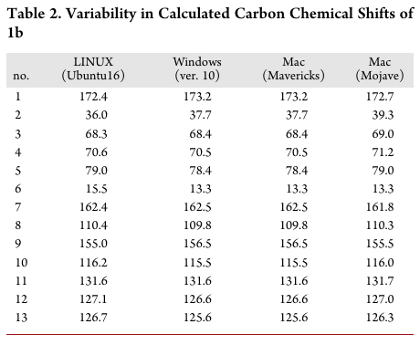

AI: Evaluating an ML Model
Module 4: Part 2 Learning Objectives
- Why evaluate ML models and understand key metrics
- Understand pros and cons of different metrics
- Understand the limitations of different metrics
You fitted a model - now what?
- What do you do next?
- Depends on why you are building it for.
- Consider
- How do we get people to use this model
- How do we generalise the findings to other datasets
- How do we have it approved by peers and medico-legally
How to evaluate a machine learning model
Complexity of the Model
- In ML, you need to trade off between bias and variance:
- Very biased model = assuming everyone is sick
- High variant model = responding to noise
- This describes the difference between overfitting and underfitting
[Source: [1]]
Overfitting
- The more parameters a model has, the more information it can represent
- However, this can lead to overfitting and inefficiency
[Source: [1]]
Evaluate Your Model: How?
- Validation is key to model reliability.
- Validation set = marking your own homework!
- Test dataset = using a separate, fresh dataset
- Beware of data leakage
- We will return to this later…
Theoretical: Why evaluate models?
- Models are not truth.
- They apporoximate the real world.
- As a good scientist, you should have a healthy skepticism of your hypotheses
- In extension, you should be skeptical of models you fitted.
Null hypothesis and Model Evaluation: parallels
- Hypothesis testing: is our finding ‘by chance’?
- Null Hypothesis: First assume there is no effect.
- Similarly, we will start from evaluating naive model
- We will compare our models against naive models.
- This allow us to generalise our model findings.
Generalisation in models
- Generalisation means the findings in your dataset are not memorised by the model.
- This means your model findings are applicable in other settings.
- It works in external data that is unseen.
What makes a good model?
- A good model is generalisable and therefore applicable.
- Note: A well-performing model in one setting may not work in others.
- e.g. screening test for cancer vs. confirmation test.
Different types of prediction
Regression vs. classification
- Regression
- How do multiple independent variables affect a depedent variable?
- Classification
- Does an outcome fit into a certain class or not?
Theory: Residuals
- Difference between true value and predicted value is called a residual.
- Residuals can be positive or negative.
- In this example, the dotted lines are residuals.
Source: [2]
Theory: Residuals
- Intuitively, the worse your model is, the bigger your residuals would be.
- What is the worst model?
[Source [2]]
The naive model
- The worst model is your naive model.
- Predicting the mean average at every value will give the largest residuals.
- This is your null model.
Better models
- For regression, you want a model that has the smallest residual.
- But how small?
Saturated Model
- What is a saturated model?
- A theoretical model where there are as many parameters as data points.
- i.e. You have 5 pairs of measurements for 5 variables.
- If you use all 5, that is a saturated model.
Saturated vs null models
- Worst model (residuals = max) → very biased
- “saturated” model (residuals = 0) → very variant.
- Why do you not want a saturated model?
Overfitting
- A saturated model means it is overfitted.
- Therefore, you want a balance between a naive model and saturated model.
Comparing the models
[Source: [3]]
How can we quantify how good a prediction is?
Metrics
- We must use a metric for evaluating the model’s predictions.
Absolute Error
- Absolute Error, where \(y_i\) is actual value and \(y_p\) is predicted value.
\[ AE = |y_i - y_p| \]
Mean absolute error (MAE)
- Divide the sum of the differences between each prediction and the actual value by the number of predictions.
\[ MAE = \frac{1}{n} * \sum_{i=1}^{n}(y_i - y_p) \]
Mean squared error
\[ MSE = \frac{1}{n} * \sum_{i=1}^{n}(y_i - y_p)^2 \]
- Take the absolute errors and square them.
- Add them together and divide by the sample size (mean average).
- The square root can be taken of this value to give the Root MSE (RMSE)
Summary: Basic regression metrics
- Mean Absolute Error = mean absolute differences
- Mean Squared Error = measures the variance of the residuals.
- Root Mean Squared Error = measures standard deviation of the residuals
Moving to classification
Moving to classification
- Moving from residuals to deviance.
- Residual is specific to when y is continuous.
- Deviance is a generalised term for residual.
- Deviance quantifies the difference between model and observations.
Moving to classification
- In classification problems, the ground truth is 0 or 1.
- Pneumonia / no pneumonia
- The model will produce a probability that the example belongs to a class
- 0.03 = low probability of pnuemonia
- How can we evaluate a classification model with the metrics we have discussed?
Overall metrics
- In regression, we use MSE and RMSE
- In classification, we use log loss
- These are the key most important metrics.
- We use log-loss as our loss function to train our model in the last workshop.
- The log-loss shows how well the model predicts the probability of a binary outcome
Extending to Crossentropy Loss
- We have been disccussing classification for one class.
- E.g. cat vs dog.
- This is binary classification
- How about multiple classes?
- e.g. car vs cat vs dog.
- Here we generalise from log loss to crossentropy loss.
Break!
Going beyond log-loss
Discrete metrics
- Models will output a probability for each class.
- Probabilities are continuous (e.g. 0.2, 0.92).
- To make a prediction (pneumonia/no pneumonia), we need to set a threshold
- Where we set the threshold will affect the classification performance.
- This threshold usually defaults to 0.5.
- This is what we see when Keras shows us the accuracy of our model.
Confusion Matrix
| Model Predicted as Yes | Model Predicted as No | |
|---|---|---|
| True value is Yes | A | B |
| True value is No | C | D |
True Positives = A
True Negatives = D
False Positives = C
False Negatives = B
Confusion Matrix
| Model Predicted as Yes | Model Predicted as No | |
|---|---|---|
| True value is Yes | A | B |
| True value is No | C | D |
Total sample size = A + B + C + D
Total cases = A + B
Total not-cases = C + D
Prevalence = total cases / total sample size
Exercise
| Model = 1 | Model = 0 | |
|---|---|---|
| True = 1 | 80 | 30 |
| True = 0 | 20 | 40 |
- Work out the following:
- Total Sample size, Total Cases, Prevalence
- Accuracy
Metrics beyond accuracy…
- What are the limitations with accuracy?
- Other metrics give us a more holistic assessment of how the classifier works:
- Precision, specificity, recall/sensitivity
Balancing evaluation
- The F1 score
- The (harmonic) mean average of the precision and recall.
- Gives an idea of the overall predictive performance of the classifier.
What happens if we change the threshold?
- As discussed earlier, many models predict probabilities which are continuous values.
- Classification relies on discrete, binary predictions. (Yes/No)
What happens if we change the threshold?
- How can we evaluate how the prediction of the model changes as we modify the threshold for detection?
- This works for clinical tests too.
- What level of procalcitonin best predicts bacterial infection?
Area under Curve
- Sensitivty and specificity is a trade off.
- If you plot the sensitivty against the specificity for different thresholds, a receiver-operator curve (ROC) can be generated.
- The area under this curve (AUC) gives us information about classification performance.
- 0.5 indicates random guessing, and 1.0 is perfect classification performance.
Example of AUC curve
An ROC curve which shows the classification performance for blood different infection markers for predicting serious bacterial infection (SBI) in febrile infants. Milcent K, Faesch S, Gras-Le Guen C, et al. Use of Procalcitonin Assays to Predict Serious Bacterial Infection in Young Febrile Infants. JAMA Pediatr. 2016;170(1):62–69. doi:10.1001/jamapediatrics.2015.3210
Putting it all together
Evaluating models
- You now know how to fit models.
- You now know how to evaluate the models.
- What do you evaluate it on?
- The gold standard is an external data set.
- Short of that:
- Split your data into training and test set.
Train-Test Split
- Test set is unseen data for your model.
- You will report performance on test set
- Test set most closely resembles an external independent dataset.
- But, data leakage
What is data leakage?
- Data leakage is where you have ridiculously good results.
- It is a false discovery.
- Involves information being available to the model in training that it will not have access to in deployment.
- Data leakage can happen for many reasons.
Examples of data leakage
- This paper trained a chest XR classifier to predict pneumonia.
- They split 112k XRs from 31k different patients randomly into training and validation sets.
- Where is the issue here?
Examples of data leakage
- The model could learn patient anatomy and changes between each XR, rather than detecting pneumonia.
- This was noticed by another researcher and subsequently corrected.
- The authors subsequently made sure that there was no patient crossover between the datasets.
Break!
Practical and Ethical Considerations
Scenario 1
- You are a GP.
- You use an AI-based clinical decision support(CDS) tool to help manage patients with “breast lump” presentations.
- The tool helps decide amongst options: invasive investigation, imaging, or watchful waiting.
- A 17-year-old male patient presents with a “breast lump.”
- Should you trust the model recommendations for this patient?
Scenario 2
- You are a clinical lead for your organization.
- You want to improve pathways for acutely unwell patients.
- You have a £100,000 budget for this.
- Your team presents two options:
- Option 1: Recruit two specialist nurses
- Option 2: Deploy an AI-based CDS and risk management system
Gold Standards in Medical AI
- Refer to this BMJ article on standards
- Also, see related BMJ content
Ethics of AI
- The ethics of AI/ML are complex:
- Should generative AI models (like ChatGPT) be allowed in research writing?
- Should clinical judgments factor in AI recommendations?
- AI/ML don’t always get it right, but neither do humans
- Does AI/ML need to be better than humans?
- Which humans? FY1 or consultant?
How Do We Do Good Stop Bad AI?
- Recognize inherent biases and discrimination
- Assume bias is present, then find and address it
- Maximize individual autonomy and privacy
- Reproducibility and transparency are crucial

Even if AI is Good?
Figure 1
NHS app and deprivation: See this study
Reproducibility: An Analogy
Kitchen and Recipe
Reproducibility: Important Questions
- Points to consider:
- What type of oven?
- What mode: fan or gas?
- Which oil: olive oil or rapeseed?
- Type of milk?
- In ML, consider:
- Technical details like Python version and framework
- Clinical details like film projection and sample types
Real-Life Example
Different operating systems parse data differently Reference: Bhandari Neupane et al., “Characterization of Leptazolines a–d” (2019).
Reproducibility Analogy
 [Source: Kitchen image]
[Source: Kitchen image]
Maximising Reproducibility
- Aim for reproducibility, even if it is challenging at first.
- Visit RAPS with R for reproducibility principles.
Revisiting the scenarios
Scenario 1 Revisited
- You are a GP.
- You use an AI-based clinical decision support(CDS) tool to help manage patients with “breast lump” presentations.
- The tool helps decide amongst options: invasive investigation, imaging, or watchful waiting.
- A 17-year-old male patient presents with a “breast lump.”
- Question: Should you trust the model’s recommendations for this patient?
Scenario 1: Critical Questions
- Was the AI CDS trained on both male and female images?
- Were patients under 18 included in the training set?
- Is the model optimized for sensitivity or specificity?
- What does your clinical judgment suggest?
- What are the local governance policies regarding AI use?
Scenario 2 Revisited
- You are a clinical lead for your organization.
- You want to improve pathways for acutely unwell patients.
- You have a £100,000 budget for this.
- Your team presents two options:
- Option 1: Recruit two specialist nurses
- Option 2: Deploy an AI-based CDS and risk management system
- Question: Which option would you choose?
Scenario 2: Considerations
- Nurses:
- Is the budget adequate for the clinical support that is needed?
- Would they provide versatility and fill in during staff shortages?
Scenario 2: Considerations
- AI System:
- Does your organization have the digital infrastructure for AI?
- Are clinical pathways aligned with AI integration?
- If AI flags deterioration, can your pathways respond effectively?
- AI offers scalability and continuous availability, but what if it fails?
Conclusion
Extending the workshop task
- The workshop task demonstrates first principles and provides a introduction into building a machine learning model.
- Machine learning is a broad field, with more fields than just computer vision…
What we have covered
- Today, we have covered:
- The basics of regression and classification
- Comprehensively evaluating binary classifiers
- Ethical and practical considerations of AI in clinical settings
- We will delve into these further in the second part of the workshop.
Further Reading and Resources
- For reproducibility guidelines, see The Turing Way
- More on big data ethics: Data Ethics Framework
Discussion and Q&A
- Let’s discuss any remaining questions on ML/AI in clinical applications!
Acknowledgements
Thank you to Teddy Hla for writing these slides.
Sources
[1] - UNDERFIT and OVERFIT Explained. Aarthi Kasirajan, Medium. URL: https://medium.com/@minions.k/underfit-and-overfit-explained-8161559b37db
[2] - How to interpret residuals in a linear regression model. Crystal X, Medium. URL: https://tracyrenee61.medium.com/how-to-interpret-residuals-in-a-linear-regression-model-7cfd8141d456
[3] - Saturated Models, Deviance and the Derivation of Sum of Squares. Egor Howell, Medium. URL: https://towardsdatascience.com/saturated-models-deviance-and-the-derivation-of-sum-of-squares-ee6fa040f52/